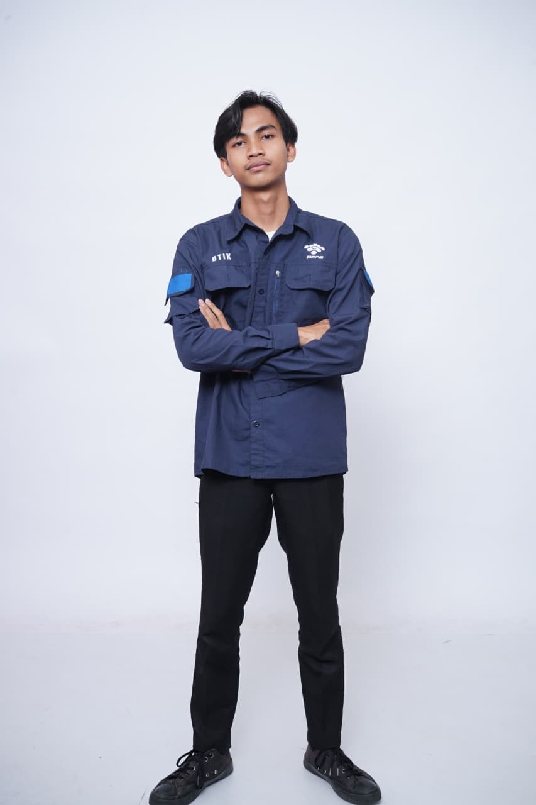

Alif Khaerul Siffa
Menjembatani logika sistem dan desain antarmuka untuk menghasilkan produk digital yang utuh.
Mahasiswa D3 Teknik Informatika dengan fokus pada Full-Stack Development. Saya menggabungkan keahlian pengembangan backend dan pemahaman UI/UX untuk membangun aplikasi web yang fungsional, terukur, dan mudah digunakan.
Tentang Saya
Saya adalah Mahasiswa D3 Teknik Informatika yang memiliki ketertarikan besar dalam menjembatani kebutuhan teknis dan pengalaman pengguna. Fokus utama saya adalah Full-Stack Development, di mana saya menikmati proses merancang arsitektur backend menggunakan Node.js dan Express, sekaligus memastikan antarmuka yang bersih dan interaktif melalui Next.js. Bagi saya, sebuah aplikasi tidak hanya harus berjalan dengan lancar di belakang layar, tetapi juga harus intuitif dan nyaman digunakan oleh end-user.
Selain pengembangan teknis, saya memiliki minat yang kuat pada aspek kepemimpinan dan manajemen produk. Saya senang mengambil inisiatif dalam memastikan sebuah produk dieksekusi dengan baik, mulai dari tahap ideasi hingga rilis. Saya antusias memecahkan masalah yang berkaitan dengan inefisiensi alur kerja, seperti mengubah proses pencatatan manual yang rentan kesalahan menjadi sistem digital yang terotomatisasi dan andal.
Keahlian & Teknologi
Frontend & UI/UX
- React
- Next.js
- Tailwind CSS
- Figma
Backend
- Node.js
- Express
Tools
- Git
Proyek Pilihan
Sistem Manajemen Perpustakaan
Aplikasi web terotomatisasi untuk mempermudah pelacakan inventaris dan pencatatan peminjaman buku perpustakaan, menggantikan sistem manual yang rentan kesalahan.
Fokus Saya: Merancang logika backend dan tampilan UI/UX (Full-Stack).
Mari Berkolaborasi
Saya selalu terbuka untuk mendiskusikan peluang kerja sama, diskusi teknis, atau pengembangan produk. Jangan ragu untuk menyapa!